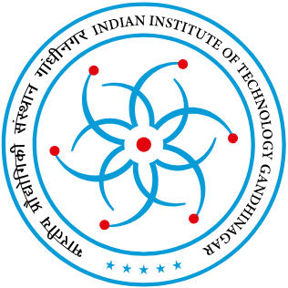
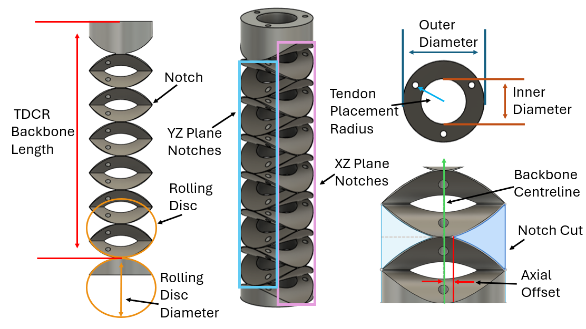
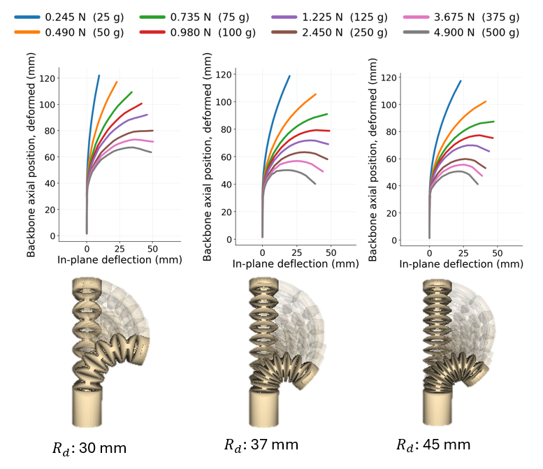
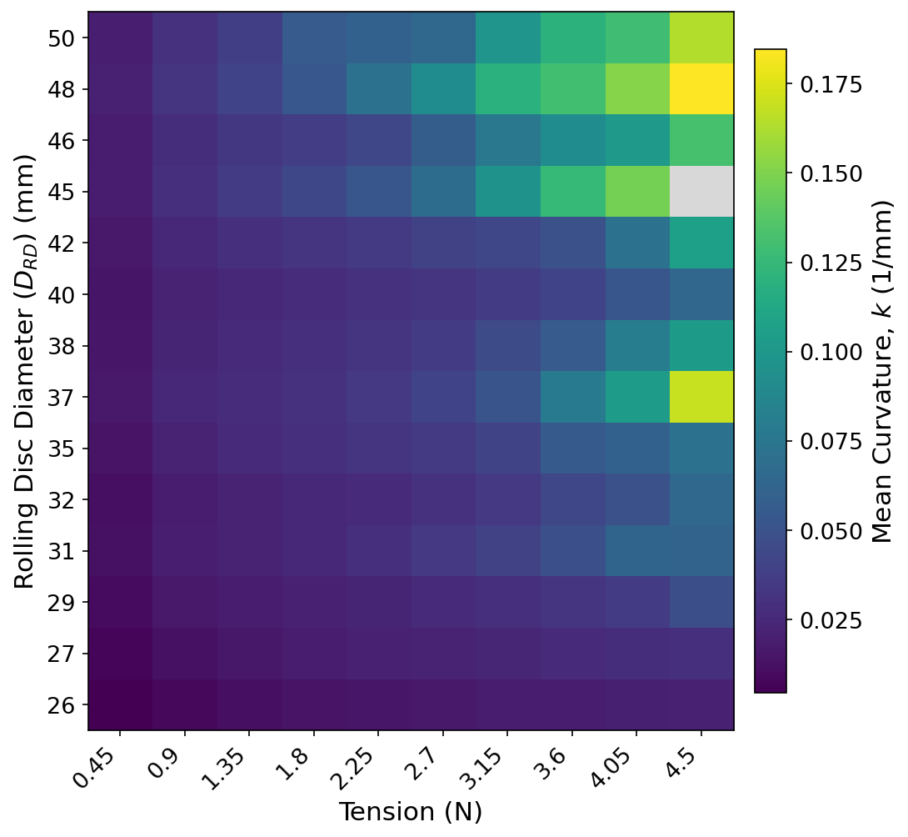
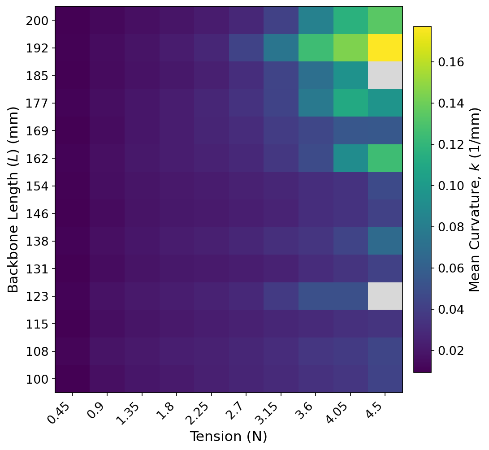
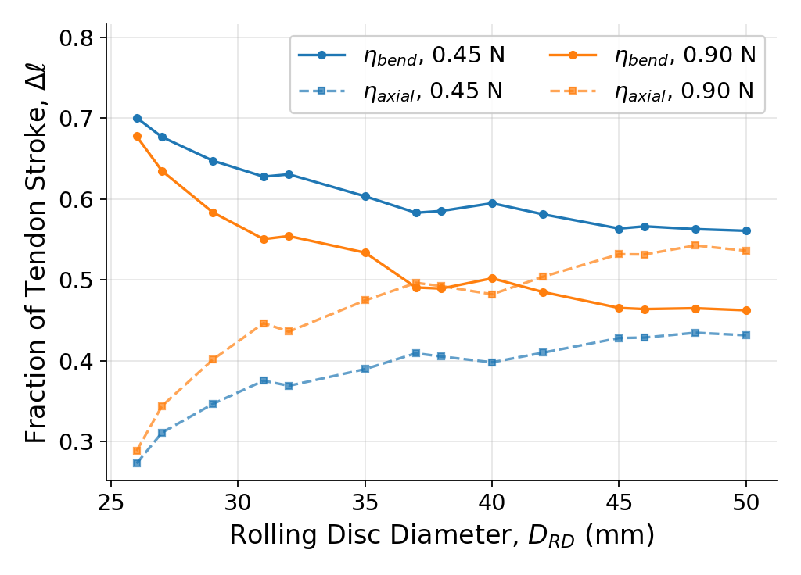
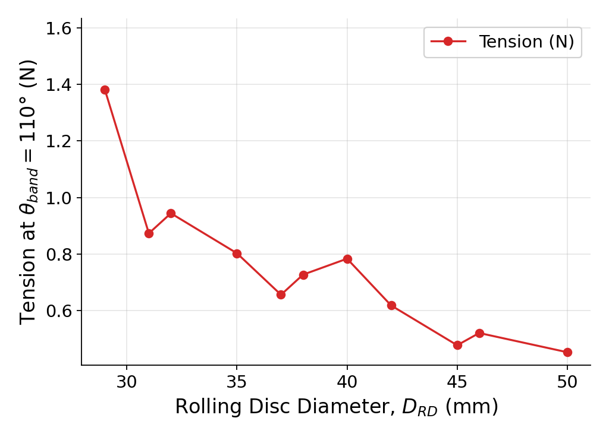
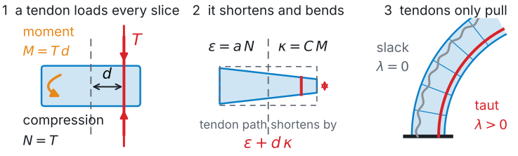
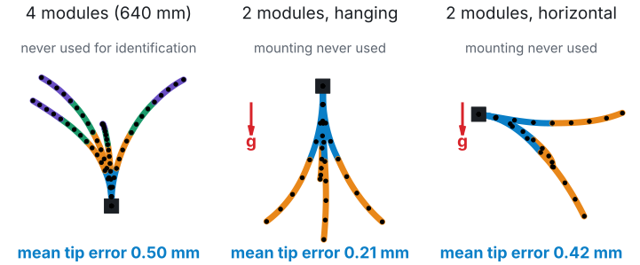
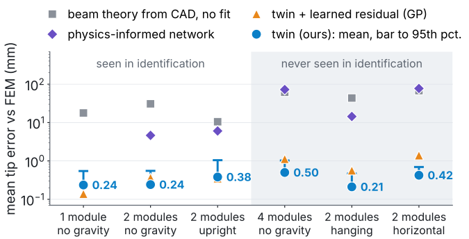

ME 299 · Project report · November 2026
From Geometry to a Real-Time Digital Twin of Rolling-Disc Notched Tendon-Driven Continuum Robots
Abstract. Tendon-driven continuum robots (TDCRs) bend along their whole length, which makes them useful in confined spaces but hard to design and to model. This project has two parts. Part A (IEEE ICRA 2027, under review, second author) asks how the geometry of a rolling-disc notched backbone sets its bending, and answers it with an automated CAD-to-FEM pipeline (616 simulations) and three printed prototypes. Part B (in preparation for IEEE RA-L, lead author) asks whether the whole shape of a modular robot can be predicted in real time from the servo commands alone. A beam model whose cross-section follows the CAD, with pull-only tendons and gravity, is identified once on one and two modules and predicts unseen four-module stacks and new mountings to 0.5 mm against FEM, in 1 to 4 ms per pose. The report also records what I learnt, how the approach changed with evidence, and the plan to take the work to hardware.
1 The robot, the two questions and this repository

| Folder | Content | Status | My role |
|---|---|---|---|
ICRA/ |
SWEEP: parametric CAD → tetrahedral mesh → SOFA FEM pipeline and the geometry study | IEEE ICRA 2027, under review. D. Yadav, O. M. Pawar, Krishnapriya R, S. Gandhi, M. Vadali | Second author: ported the pipeline to SOFA 25.06, parallel sweeps, mesh-fidelity and settling checks |
RA-L/ |
tdcr-twin: the digital-twin package, FEM data, results, paper draft |
In preparation for IEEE RA-L | Lead: model, solver, identification, baselines, software, reproduction, paper |
learning/ |
Literature review, progress report (30 Sep), method and plan (19 Oct) | Course record | Author |
poster/ |
A0 poster of both parts | Final evaluation | Author |
2 What I learnt
2.1 Literature review
I read about thirty papers; full notes are in learning/literature_review.md.
Table 2 lists the ones that changed what I built.
| Topic | Key idea | What I took from it |
|---|---|---|
| Constant-curvature kinematics [1, 2] | Each section bends as a circular arc | The first baseline. It fails on a loaded notched robot: its error grows about five-fold with notch count (A) and reaches 11 to 68 mm (B) |
| Tendon mechanics and coupling [3, 4] | Tendon stroke = bending + axial compression; tendons of distal sections load proximal ones; slack | The core of the twin and the stroke budget of Part A. Also showed the pull-only model is not new, so the contribution moved to identification and transfer |
| Cosserat rods [5, 6] | Exact rod statics; displacement inputs need complementarity | Pull-only tendons as a convex problem; an independent Cosserat solver to check mine (0.004 mm) |
| Benchmarking [7] | Report tip error as % of robot length | The hardware pass criterion: 2 % of length, fixed before data |
| FEM for soft robots [8, 9, 10] | SOFA with cable constraints as ground truth | A simulator must be checked before it is trusted: I found cables that could push and gravity 1000× too weak |
| Shape estimation [11, 12, 13] | GP on SE(3) from sensors; observers from actuator readings; modular models of one robot | The gap: no work calibrates on 1 to 2 sections and predicts longer stacks or other mountings without sensors |
| Modular digital twins [14] | Calibrate modules alone, compose them | Closest work. There, actuation is local to a module; here tendons load every module below, so a module cannot be calibrated alone |
| Physics-informed learning [15–18] | PINNs and neural operators for continuum-robot shape | They learn the solution for one robot and are retrained per design. I learn the law inside an exact solver, and use operators across designs as the next step |
2.2 How the approach changed with evidence
- Virtual sensor Constant curvature + FEM + a Gaussian process on the tip.Tip-only learning says nothing about the body.
- SOFA 25.06 port The lab's CAD→FEM pipeline, used for the ICRA study (submitted 15 Sep).Read logs: timeouts are not equilibria.
- Whole-body GP Shape modes along the backbone: tip 14.7→0.16 mm on one section.Fixed pushing cables, weak gravity.
- Literature check The pull-only model is Camarillo 2009. Switched to the real 6-channel robot and a beam built from its CAD.Check novelty early.
- Law, not residual Learned residuals did not carry over to longer stacks; a module law does.Learn what transfers.
- PINN baseline, hardware PINNs fit but do not transfer. Printable TPU modules and couplers.Test the strongest alternative.
- Package and audit Tests, one-command reproduction, physics audit: torsion ×2.45, a 5th calibration number.Every number must regenerate.
2.3 Skills gained
Record of the semester (in learning/):
progress report to the supervisor (30 Sep), method and research plan (10 Oct, revised 19 Oct) and the literature review.
3 Part A: how geometry governs compliance ICRA 2027, under review
Each notch is removed from a tube of outer radius Ro and length L by a rolling disc of diameter DRD = 2Rd; with a clearance c between cuts, the notch pitch is
(1)
so DRD sets how many notches fit. SWEEP turns a parameter set into a measured bend with no manual step (Fig. 2): 14 designs × 4 tendons × 11 loads = 616 runs (614 completed), TPU with the measured E = 56 MPa, gravity on. Claims are limited to tension T ≤ 0.9 N, where the model stays valid.





(2)
| DRD (mm) | centreline | tip | axial |
|---|---|---|---|
| 30 | 18.5 | 20.9 | 43.1 |
| 67.89 | 10.1 | 23.5 | 11.9 |
| 86.84 | 16.3 | 64.7 | 23.9 |
- Disc diameter sets curvature. 26 to 50 mm: 4 to 12 notches, bend 54° to 143° at 0.9 N, but the deviation from constant curvature grows about five-fold.
- Length sets reach. 100 to 200 mm: tip travel 78 to 157 mm while curvature changes by less than 20 %.
- Nearly half the stroke is compression. The budget (2) closes to 0.99 on notched designs (0.72 on a plain tube); 14 to 17 mm of a 33 to 36 mm stroke shortens the body instead of bending it. A larger disc halves the force for a 110° bend (0.87 to 0.45 N).
- Four tendons suit the structure. The anisotropy index falls from 6.2 % to 2.6 % (13 of 14 designs), and two antagonistic pairs need two motors per section.
- Experiments agree on shape, less on the tip (Table 3): friction and self-contact are not modelled.
My contribution. I ported the pipeline from SOFA 23 to 25.06 (batch runner, removed components, a duplicate-mass fix, failure classification), added parallel and phased sweeps, a CAD-versus-mesh volume check and a per-run check for timeouts and self-contact, and reported the settling and mesh-convergence limits that set the 0.9 N validity range.
4 Part B: a sensor-free, real-time digital twin in preparation for IEEE RA-L
Input: servo commands and the mounting. Output: the backbone pose every 5 mm. Nothing is measured on the robot; one module model is composed by statics into any stack.
4.1 The physics

Integrating the slice compliances from the CAD gives a map from tensions to tendon shortening that is exactly linear at any bend angle, and pull-only tendons become a convex problem with a unique solution:
(3)
(4)
Here τic ∈ {0,1} marks the slices tendon i passes and ctLi is tendon stretch. Gravity in any direction is added by a fixed point around (4). In a notch only two 4 mm bridges of the sleeve remain: area ÷8, bending stiffness ÷280, so the notches do the bending.
Verification. The solver matches closed-form beam cases to under 1 µm and an independent Cosserat rod to 0.004 mm.
4.2 Scientific ML: learn the law, not the solution
Beam theory underestimates how compliant a short notch is. I learn the law, not the shape: one scale per notch family, fitted through the exact solver on 675 FEM poses of one and two modules,
(5)
giving notch compliances ×20.2 (axial) and ×5.9 / 5.3 (bending) of beam theory, and torsion ×2.45 from a twist test. The law has four physical numbers and is reused unchanged for every stack and mounting.


| Model | seen (1–2 modules) | new mounting | 4 modules |
|---|---|---|---|
| Beam theory from CAD, no fit | 10.5–30.8 | 43.6–68.0 | 61.7 |
| Twin + learned residual (GP) | 0.14–0.36 | 0.56–1.40 | 1.12 |
| PINNs, forward and inverse (learn the solution) | 3.4–6.0 | 9.2–77 | 54–73, retrained |
| Identified law in the exact solver (ours) | 0.24–0.38 | 0.21–0.42 | 0.50 (0.08 % of length) |
5 Future scope: how this long-term project will be executed
The two parts meet in one direction: SWEEP generates designs (A), and the twin turns each design into a module law (B). Making that law a function of geometry gives a model that answers “which backbone gives this shape with this stroke?” in milliseconds.
1 Hardware validation Nov 2026 – early 2027
Print and weigh four modules; pretension 1 : 1.75 : 2.25 : 2.5. PhaseSpace motion capture. Calibrate 5 numbers (the four of (5) and the moment arm) on about 15 poses of two modules; test four modules upright and hanging.Pass: mean tip error ≤ 2 % of length (13 mm), fixed before any data.
2 Geometry-conditioned law 2027
Identify the law for each SWEEP design and fit θ = f(DRD, Di, L), first as a smooth regression, then as a neural operator if the data demand it.Pass: beats beam theory from the CAD on designs held out entirely.
3 Inverse design and control 2027 onwards
Target curvature and stroke budget → geometry; print and verify. Use the twin as the model in closed-loop shape control.Pass: a printed design meets its target bend within the Phase 1 tolerance.
| Risk | Sign in the data | Response |
|---|---|---|
| Notch law not linear on hardware | Residual grows with bend angle | A convex notch energy ψθ(N, M) in place of the linear law, kept inside the same solver |
| Friction in the tendon channels | Hysteresis between loading and unloading | The capstan term already in the code; load in one direction only |
| Self-weight confounded with stiffness | Stiffness and mass trade off in the fit | Weigh every module; never fit mass from shape |
| Creep of TPU | Drift at constant command | Fixed settling time per pose; repeat poses at the start and end |
Outputs planned. ICRA 2027 decision and revision (early 2027); RA-L submission once Phase 1 gives a hardware table; the twin as an installable package.
6 Conclusions and what I gained
- Design (A): disc diameter sets curvature, length sets reach, and nearly half the tendon stroke goes into compression; four tendons suit the two-plane symmetry.
- Model (B): a module law identified on short stacks, inside exact physics, predicts longer stacks and new mountings to 0.5 mm against FEM in milliseconds; learned solutions do not transfer.
- What I gained: continuum-robot mechanics from first principles, FEM practice and its pitfalls, convex optimisation and identification, where learning helps and where physics must carry the generalisation, and research habits: check novelty, verify the simulator, state pass criteria before data, make every number reproducible.
References
- R. J. Webster, B. A. Jones, “Design and kinematic modeling of constant curvature continuum robots: a review,” IJRR, 29(13), 2010.
- J. Burgner-Kahrs, D. C. Rucker, H. Choset, “Continuum robots for medical applications: a survey,” IEEE T-RO, 31(6), 2015.
- D. B. Camarillo et al., “Mechanics modeling of tendon-driven continuum manipulators,” IEEE T-RO, 24(6), 2008.
- D. B. Camarillo, C. R. Carlson, J. K. Salisbury, “Configuration tracking for continuum manipulators with coupled tendon drive,” IEEE T-RO, 25(4), 2009.
- D. C. Rucker, R. J. Webster, “Statics and dynamics of continuum robots with general tendon routing and external loading,” IEEE T-RO, 27(6), 2011.
- K. Oliver-Butler, J. Till, C. Rucker, “Continuum robot stiffness under external loads and prescribed tendon displacements,” IEEE T-RO, 35(2), 2019.
- P. Rao, Q. Peyron, S. Lilge, J. Burgner-Kahrs, “How to model tendon-driven continuum robots and benchmark modelling performance,” Front. Robot. AI, 7, 2020.
- F. Faure et al., “SOFA: a multi-model framework for interactive physical simulation,” Springer, 2012.
- E. Coevoet et al., “Software toolkit for modeling, simulation, and control of soft robots,” Adv. Robot., 31(22), 2017.
- C. Duriez, “Control of elastic soft robots based on real-time finite element method,” ICRA, 2013.
- S. Lilge, T. D. Barfoot, J. Burgner-Kahrs, “Continuum robot state estimation using Gaussian process regression on SE(3),” IJRR, 41(13–14), 2022.
- D. Feliu-Talegon et al., “Dynamic shape estimation of tendon-driven soft manipulators via actuation readings,” IEEE RA-L, 10(1), 2025.
- Zhang et al., “A general modular framework for modeling cable-driven continuum surgical robots,” Int. J. Mech. Sci., 318, 2026.
- S. H. Kim et al., “Digital twins for the design, interactive control, and deployment of modular, fiber-reinforced soft continuum arms,” arXiv:2507.10121, 2025.
- N. Feizi et al., “Few-shot physics-informed neural network for shape reconstruction of concentric-tube robots,” ICRA, 2026.
- R. Danesh, P. Qarehdaghi, F. Janabi-Sharifi, “Constraint-aware physics-informed neural networks for static shape estimation of co-manipulative continuum robots,” arXiv:2608.26273, 2026.
- G. Zhan et al., “Physics informed neural pose estimation for real-time shape reconstruction of soft continuum robots,” IEEE RA-L, 10(7), 2025.
- B. Frieden, J. M. Ferguson, A. Kuntz, V. Shankar, “Neural operators for design-space surrogate modeling of tendon-actuated continuum robots,” ICRA, 2026.